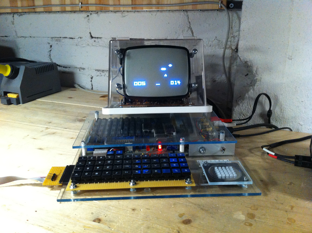

Rust ile CHIP-8 Emülatörü Geliştirme
Bu kitap Rust Programlama Dili ve farklı mimariler için emülatör yapımını öğrenmek isteyenler için yazılmış eğitici bir belgedir. Yazı programlamayı sıfırdan öğretmemektedir ve okuyucuların daha önce en az bir programlama dili bildiği varsayılmıştır. Aynı zamanda emülatör geliştirirken lazım olan bir çok bitdüzeyi (bitwise) işlem kullanılmıştır. Bitdüzeyi işlemler olabildiğince anlaşılır bir dilde açıklanmasına rağmen, okuyucuların konu hakkında daha önce bilgili olması anlamalarını daha da kolaylaştıracaktır.
Neden CHIP-8 Emülatörü Yazmalıyım?
CHIP-8 sadece 35 opcode'u bulunan çok basit bir sistemdir. Aynı zamanda bir çok opcode modern CPU'larda da kullanıldığından bu sistem için geliştirilecek bir emülatör projesi, gerekse modern CPU'ların çalışma prensibini ve temelinde bir sistem programlama dili olan Rust'ı öğrenmek için en iyi başlangıç projelerinden biridir. Yıllardır Rust programlama dilini öğrenmek isteyenlere bir CHIP-8 emülatörü yazarak başlamalarını tavsiye ederim.
Yazar Hakkında
Rust'ı stabil sürümü çıkmadan, beta sürecinden beri gündelik yaşamımda kullanmaktayım. Rust için belgeleme aracı olan Docs.rs'i geliştirdim ve Mozilla'nın Rust Programlama Dili organizasyonunda geliştirmesine devam etmekteyim. Bana ulaşabileceğiniz kanallar:
- GitHub: https://github.com/onur
- Twitter: https://twitter.com/oasln
- E-posta: onur@onur.im
Kaynak Kodları
Bu kitapta kullanılan tüm kod örneklerine, projenin çalışabilir halinin tamamına ve kitabın kaynak kodlarına GitHub üzerinden erişilebilirsiniz: https://github.com/onur/chip8. Proje göndereceğiniz her türlü katkıya açıktır.
CHIP-8 Hakkında
CHIP-8 1970'lerin sonunda 1980'lerin başında kendi kendine yap (DIY) bilgisayar sistemleri için kullanılmış, basit, yorumlanan bir programlama dilidir. The COSMAC VIP, DREAM 6800 ve ETI 660 bu bilgisayarlar için birer örnektir.

Telmac 1800, CHIP-8 oyunu Space Intercept çalıştırıyor.
Bu sayfanın geri kalanı referans niteliğindedir ve ihtiyaç duyulduğunda geri dönüp tekrar bakılmak üzere hazırlanmıştır. İsterseniz bu sayfayı okumayı geçebilirsiniz, yine de bir göz gezdirmenizde fayda var.
CHIP-8 Özellikleri
1. Bellek
CHIP-8 dili 0x000'dan 0xFFF'e kadar 4KB (4096 byte) RAM'e ulaşabilir.
İlk 512 byte (0x000-0x1FF) yorumlayıcının bulunduğu alandır ve hiç bir
program bu alanı kullanmamalıdır.
Çoğu CHIP-8 programı 0x200 alanından başlar. ETI-660 için olan bazı
programlar 0x600'den başlar fakat bu bir istisna olduğundan görmezden
geleceğiz.
Bellek haritası:
+---------------+= 0xFFF (4095) CHIP-8 RAM'inin sonu
| |
| |
| |
| |
| 0x200 - 0xFFF |
| CHIP-8 |
| Program ve |
| Veri Alanı |
| |
| |
| |
+---------------+= 0x200 (512) CHIP-8 programlarının başlangıcı
| 0x000 - 0x1FF |
| Yorumlayıcı |
| için ayrılmış |
| alan |
+---------------+= 0x000 (0) CHIP-8 RAM'inin başlangıcı
2. Registerlar (Yazmaçlar)
CHIP-8 8-bit boyutunda 16 tane genel kullanımlı register'a sahiptir. Bu registerlar genelde Vx olarak adlandırılır (x: 0 dan F'e olmak suretiyle 16 lık bir sayıdır). Bir tane de 16-bitlik I isimli register vardır. Bu register genelde bellek adresini tutmaya yarar ve bu nedenle I registerinin sadece en düşük, (sağdan) 12 biti kullanılır.
VF registeri hic bir program tarafından kullanılmamalıdır ve bu register bazı instructionların flag değerini saklamak için kullanılır.
CHIP-8 ayrıca, gecikme ve ses zamanlaması için, iki 8-bit uzunluğunda özel kullanımlı register'a sahiptir. Bu registerlar sıfır olmadığı zaman, 60 Hz oranında düşürülür.
Çalışmakta olan adresi tutan; 16-bit boyutunda program sayacı (PC: program counter) ve stack'in en üst adresini tutan; 8-bit uzunluğunda stack pointer (SP) sözde-registerları da vadır. Bu registerlara hiç bir program ulaşamaz.
Stack 16 tane 16-bitlik değerden oluşur.
3. Klavye
CHIP-8 dilinin kullanıldığı bilgisayarlar aşagıdaki şemadaki gibi 16 tuşlu klavyeye sahiptir:
+---+---+---+---+
| 1 | 2 | 3 | C |
| 4 | 5 | 6 | D |
| 7 | 8 | 9 | E |
| A | 0 | B | F |
+---+---+---+---+
Bu klavyenin modern bilgisayarlarda çalışabilmesi için tekrar haritalanması gerekmektedir.
4. Görüntü
CHIP-8 dili 64x32 boyutunda, aşağıdaki formata sahip siyah beyaz bir ekrana sahiptir:
+-------------------+
| (0,0) (63,0) |
| (0,31) (63,31) |
+-------------------+
Programlar 0'dan F'e kadar olmak üzere CHIP-8 belleği üzerinde yer alan spriteları da gösterebilir.
5. Zamanlayıcılar ve Ses
CHIP-8'de 2 tane zamanlayıcı bulunmaktadır: Gecikme ve ses zamanlayıcıları.
Gecikme zamanlayıcısı 0 olmadığı süre boyunca aktiftir ve her 60Hz yenileme sürecinden sonra bir azaltılır.
Ses zamanlayıcısı da aynı gecikme zamanlayıcısı gibi çalışır. Tek fark aktif olduğu süre boyunca CHIP-8 zili öter.
Ayrıntılı Bilgi
CHIP-8 hakkında daha fazla bilgi almak için: Cowgod'un Chip-8 Teknik Referans'ı sayfasına göz atabilirsiniz.
Başlangıç
Projeye başlamadan önce Rust Programlama Dili derleyicisinin
bilgisayarınızda kurulu olması gerekmektedir. Rust derleyicisini işletim
sisteminize göre Rust kurulumu
sayfasında anlatıldığı gibi kurabilirsiniz. Bu kurulum bilgisayarınıza Rust
Programlama Dili derleyicisi rustc ve paket yöneticisi cargo'yu
kuracaktır. Cargo, Rust paketlerinin bağımlılığı çözüp, indirip derlemeye
yarayan bir araçtır.
Yeni Proje Oluşturması
Cargo aynı zamanda yeni bir proje oluşturmanızı da sağlar. Yeni bir Rust projesi oluşturmak için komut satırından aşağıdaki komutları kullanın:
$ cargo new chip8
$ cd chip8
İkinci satırdaki komut, çalışma dizinimizi yeni projemizin içerisinde
almaktadır. Bu adımdan sonra cargo build ile projenizi derleyebilir,
cargo run ile çalıştırabilirsiniz. Yeni oluşturduğumuz projemizde cargo run komutunu kullandığımızda karşımıza Hello, world! yazısı çıkacaktır:
$ cargo run
Compiling chip8 v0.1.0 (/home/onur/chip8)
Finished dev [unoptimized + debuginfo] target(s) in 0.42s
Running `target/debug/chip8`
Hello, world!
Rust paketlerinin meta verisi Cargo.toml içerisinde tutulmaktadır. Bu
dosya içinde bağımlılıkları tanımlayabilirsiniz. Şu an için bizim bu dosya
üzerinde yapacağımız bir değişiklik yok, yine de ön bilgi edinmek için bu
dosyayı inceleyebilirsiniz. Cargo hakkında daha fazla bilgi almak için
Cargo kitabını okuyabilirsiniz.
Rust Programlama Dili'nde her bir proje aynı zamanda bir pakettir. Bir
paket; kütüphane veya çalıştırılabilir bir program olabilir. Eğer
paketinizin kaynak dizini (src) içerisinde main.rs bulunursa, paketiniz
çalıştırılabilir bir program olarak derlenir. cargo new ile oluşturulan
bir paket, varsayılan olarak çalıştırılabilir bir program olarak
oluşturulur. main.rs yerine lib.rs kullanan bir paket, kütüphane olarak
tasarlanmıştır. Kütüphaneler aynı zamanda çalıştırılabilir programlarda
barındırabilir. Biz bu projede çalıştırılabilir bir program yapacağımızdan,
Cargo'nun oluşturduğu main.rs'e sadık kalacağız.
Bağımlılıkların Eklenmesi
Rust'ta paket bağımlılıkları Cargo.toml dosyası içerisinde [dependencies]
bölümüne eklenir. Bu bölüme eklenen bağımlılıkları cargo, otomatikmen Rust
paket deposu olan crates.io dan indirir derler ve
uygulamızla birleştirir. Biz uygulamamızda sadece iki tane bağımlılık
kullanacağız. Bunları [dependencies] bölümüne ekleyelim:
[dependencies]
rand = "0.7"
minifb = "0.13"
rand paketi rastgele bir sayı üretmeye yarar, minifb paketi en yaygın
işletim sistemlerinde (Windows, OSX ve Linux) basit bir şekilde pencere
oluşturup cizim yapmaya yarar.
Biz projemizde Rust 2018 yayınını kullandığımızdan, paketimiz içine tekrar
extern crate tanımlaması yapmamıza gerek yok.
Opcode Yapısı
CHIP-8'in tüm OPCODE'ları 16-bit uzunluğundadır. Bu nedenle çok basit bir bir OPCODE yapısı tanımlayalım:
pub struct Opcode(u16);
Rust'ta yapılar struct anahtar kelimesiyle tanımlanır. Struct'lar:
Opcodeyapımızda kullandığımız gibi bir isim sahibi tuple olabilir.- C dilindeki gibi elemanlar içerebilir.
- Hiç bir eleman içermeden unit biçiminde olabilir.
Biz sadece 16-bitlik bir sayı üzerine eklemeler yapacağımız için, tuple cinsinden struct kullanıyoruz.
Yapımızın başına gelen pub anahtar kelimesi, yapıyı açık hale getirerek
şu an kullandığımız modül dışında da erişimini mümkün kılmaktadır. pub
anahtar kelimesi yapılar dışında; enumlar, metodlar, fonksiyonlar ve type ile
kendi tanımladığınız tipler için de kullanılabilir.
Rust'ta yer alan primitif tipler (yapımızda kullandığımız
u16), tek haneli bir önek ardından gelen boyut ile tanımlanır. Yani
u8: 8-bit boyutunda bir unsigned (sadece pozitif sayıları tutabilen) bir
sayı tipidir. u16 tahmin edilebileceği üzere 16-bit boyutunda bir
unsigned sayı tipidir. Dilde yer alan diğer primitif tipleri görmek için,
Rust kitabında yer alan
primitif tipler
bölümüne başvurulabilir.
16-bitlik bu OPCODE'un her bir basamağı (nibble) farklı anlamlara
gelmektedir. Örneğin: 0x71AA OPCODE'u; 1. registerdeki değere 0xAA
sayısını eklemeye yarar. Bu nedenle her bir basamağı alabilmek için, Opcode
yapımıza yardımcı metodları ekleyelim:
impl Opcode {
/// OPCODE üzerinde 0x0X00 değerini döner
fn oxoo(&self) -> usize {
((self.0 & 0x0F00) >> 8) as usize
}
/// OPCODE üzerinde 0x00Y0 değerini döner
fn ooyo(&self) -> usize {
((self.0 & 0x00F0) >> 4) as usize
}
/// OPCODE üzerinde 0x000N değerini döner
fn ooon(&self) -> u8 {
(self.0 & 0x000F) as u8
}
/// OPCODE üzerinde 0x00NN değerini döner
fn oonn(&self) -> u8 {
(self.0 & 0x00FF) as u8
}
/// OPCODE üzerinde 0x0NNN değerini döner
fn onnn(&self) -> u16 {
self.0 & 0x0FFF
}
}
Rust'ta yapılara eklenecek metodlar impl bloğu içinde yer alır. Aynı
zamanda metodların ilk parametresi: &self bu fonksiyonların sadece
oluşturulan bir Opcode instance'ı ile çalışacağını belirtir.
Methodlar fonksiyonlar gibidir ve fn anahtar kelimesi kullanılarak
tanımlanır. Parametreler, dönüş değeri ve çağrıldığında çalıştırılacak kod
bloğuna sahiptirler. Methodların fonksiyonlardan farkı ise, bir yapı
(struct veya enum) için tanımlanırlar ve ilk parametre o yapıya ait
instance'a ulaşabileceğimiz self anahtar kelimesidir. Eğer metod
çalıştırıldığında, instance sahipliğini almak istemiyorsak, self
parametresi başına & koyularak referans olarak eklenir. Instance'ı referans
olarak sunmayıp sahipliğini alsaydık, bu metodların kullanımının ardından
instance sahipliği kaybolacaktı.
Metod adı ve parametrelerinin ardından döneceği tip -> dan sonra yazılır.
Yapımız tuple cinsinden bir struct olduğu için, yapı içerisindeki veriye
aynı tuplelarda olduğu gibi self.0 ile ulaşılır.
Rust'ta primitif tipler (u8, u16 vb.) as anahtar kelimesiyle birbirine
dönüştürüleblir. Fakat unutmayın ki boyutu büyük bir sayı (u16), as anahtar
kelimesiyle daha küçük bir sayıya dönüştürülürken hiç bir uyarı vermeden sayıyı
kırpabilir. Bu nedenle eğer büyük bir sayıyı küçük bir sayıya dönüştürmek
istiyorsanız u8::from() metodunu kullanın. Biz geliştirdiğimiz uygulamada
dönüştürülen sayıların 16-bit'ten küçük olduğunu bildiğimiz için as anahtar
kelimesini kullanacağız.
Metod isimleri ilk bakışta garip gelebilir fakat, CHIP-8 OPCODE'larında her
zaman soldan ikinci basamak x: ilk register numarasını, üçüncü basamak
ise y: ikinci register numarasını içermektedir. İleride array cinsinden
olan registerlarda daha rahat çalışabilmek için x ve y registerlarını
dönen oxoo, ooyo metodları usize dönmektedir (Rust'ta array indisleri
usize cinsinden olmalıdır).
Yapılan bitwise işlemleri açıklamak gerekirse, tekrar 0x71AA örneğini
ele alalım. 0x71AA sayısında ikinci basamakta yer alan 1 değerini almak
için öncelikle oxoo metodunu kullanmamız gerekli. Bu metod şu işlemleri
yapmaktadır:
0x71AA 111000110101010 XOR
0x0F00 000111100000000
0x0100 000000100000000 >> 8
0x0001 000000000000001 # 16-bit uzunluğundaki sayı, CHIP-8'de sadece 16
-------------------------- # register bulunduğundan 8-bit'e dönüştürülür:
0x01 00000001
Ardından 0xAA sayısı alınabilmesi için oonn metodu kullanılır:
0x71AA 111000110101010 XOR
0x00FF 000000011111111
0x00AA 000000010101010 # Son iki basamak sadece 8-bit uzunluğunda
# olabileceğinden çıkan sonuç 8-bit'e dönüştürülür
--------------------------
0xAA 10101010
Sayıların OPCODE'a Dönüştürülmesi
İleride işimize yarayacağı için 16-bitlik bir sayının (u16), Opcode
yapısına kolayca dönüştürülmesini sağlayan
From özelliğini
eklememiz gerekli. Rust'ta yapılara yeni özellikle şu şekilde eklenir:
impl From<u16> for Opcode {
fn from(opcode: u16) -> Opcode {
Opcode(opcode)
}
}
From özelliği aynı zamanda Into özelliğini de otomatikmen eklediğinden,
Opcode kullanmamız gereken parametrelerde Into<Opcode> genelleyici tipini
kullanmamız yeterli olacak. Bu sayede Opcode hem verbose olarak
Opcode(0xF1AA) hem de into metoduyla direkt bir sayıdan dönüştürülebilir.
Genelleyiciler (generics) ve özellikler (traits) çok kapsamlı bir konudur ve Rust'ın en önemli bileşenlerindendir. Şimdilik kafanızı çok fazla karıştırmanıza gerek yok fakat isterseniz Rust kitabında yer alan: Özellikler bölümünü okuyabilirsiniz.
Instuction Yapısı
Bu bölümde Rust'ta enum cinsinden yeni bir yapı tanımlama şeklini
göreceğiz. Rust'ta enum'lar farklı biçimlerde yapılar içerebilir. Örneğin
bir enum içerisinde yer alan yapı: unit benzeri hiç bir eleman içermeyen,
tuple cinsinden ya da C benzeri bir struct olabilir. Her bir geçerli
struct yapısı, aynı zamanda geçerli bir enum biçimidir.
Rust'ın yine en güçlü özelliklerinden biri olan pattern matching, enum
yapısını kolay bir şekilde parçalayarak işlemeye yarar. Yazacağımız
emülatörün okunabilir olabilmesi için, 16-bitlik sayı olarak okuduğumuz
Opcode'u, enum ile okunabilir bir yapıya dönüştüreceğiz.
Bu işlemi yapmadan önce 16-bit uzunluğunda olan ve bellekte bir adresi
ifade eden Address tipimizi ve array indislerinde kolayca kullanmamızı
sağlayan Register tipimizi tanımlayalım:
pub type Address = u16;
pub type Register = usize;
Rust'ta yeni tipler type anahtar kelimesiyle tanımlanır. Başka bir tipi
daha okunabilir bir hale getirmeye yarar. Bu sayede artık adres olduğunu
bildiğimiz alanlar için u16 yerine Address tipini kullanabiliriz.
CHIP-8, 35 instructiona sahip bir yorumlayıcı. Bu OPCODE'ların hepsini bir
enum içerisinde şu şekilde tanımlayabiliriz:
pub enum Instruction {
/// 0x00E0 CLS: Ekranı temizler
ClearDisplay,
/// 0x00EE RET: Alt programdan döner
Return,
/// 0x1nnn JP: `nnn` adresine zıplar
Jump(Address),
/// 0x2nnn CALL: `nnn` adresindeki alt programı çağırır
Call(Address),
/// 0x3xnn SE: Eğer `x` registeri `nn`'e eşitse bir sonraki instruction'ı atlar
SkipIfEqualsByte(Register, u8),
/// 0x4xnn SE: Eğer `x` registeri `nn`'e eşit değilse bir sonraki instruction'ı atlar
SkipIfNotEqualsByte(Register, u8),
/// 0x5xy0 SE: Eğer `x` registeri `y` registerine eşitse
/// bir sonraki instruction'ı atlar
SkipIfEqual(Register, Register),
/// 0x6xnn LD: `x` registerinin değerini `nn` yapar.
LoadByte(Register, u8),
/// 0x7xnn ADD: `x` registerindeki değere `nn` ekler.
AddByte(Register, u8),
/// 0x8xy0 LD: `x` registerinin değerini `y` registerinin değerine eşitler.
Move(Register, Register),
/// 0x8xy1 OR: `x` registerinin değerini `y` registerinin değeriyle
/// bitwise OR işlemi yapar.
Or(Register, Register),
/// 0x8xy2 AND: `x` registerinin değerini `y` registerinin değeriyle
/// bitwise AND işlemi yapar.
And(Register, Register),
/// 0x8xy3 XOR: `x` registerinin değerini `y` registerinin değeriyle
/// bitwise XOR işlemi yapar.
Xor(Register, Register),
/// 0x8xy4 ADD: `x` registerinin değerini `y` registerinin değeriyle toplar ve `x`
/// registerinin değerini sonuca eşitler. Çıkan sonuç 8 bitten fazla ise, `F` (carry)
/// registerinin değerini 1 yapar, değilse 0.
Add(Register, Register),
/// 0x8xy5 SUB: `x` registerinin değerini `y` registerinin değerinden çıkarır ve `x`
/// registerinin değerini sonuca eşitler. Eğer `x` registerindei değer, `y`
/// registerindeki değerden büyükse, `F` (carry) registerinin değerini 1 yapar,
/// değilse 0.
Sub(Register, Register),
/// 0x8xy6 SHR: `x` registerindeki değeri bir bit sağa kaydırır.
/// Eğer `x` registerinin son biti 1 ise `F` (carry) registerinin değerini 1 yapar
/// değilse 0.
ShiftRight(Register),
/// 0x8xy7 SUB: `y` registerinin değerini `x` registerinin değerinden çıkarır ve `x`
/// registerinin değerini sonuca eşitler. Eğer `x` registerindei değer, `y`
/// registerindeki değerden büyükse, `F` (carry) registerinin değerini 1 yapar,
/// değilse 0.
ReverseSub(Register, Register),
/// 0x8xyE SHR: `x` registerindeki değeri bir bit sola kaydırır.
/// Eğer `x` registerinin son biti 1 ise `F` (carry) registerinin değerini 1 yapar
/// değilse 0.
ShiftLeft(Register),
/// 0x9xy0 SE: Eğer `x` registeri `y` registerine eşit değilse
/// bir sonraki instruction'ı atlar
SkipIfNotEqual(Register, Register),
/// 0xAnnn LD: `I` registerinin değerini `nnn` yapar.
LoadI(Address),
/// 0xBnnn JP: `nnn` ve `V0` registerinin toplamından çıkan sonuca zıplar.
JumpPlusZero(Address),
/// 0xCxnn RND: Rastgele üretilen 8 bitlik sayı `nn` ile AND işleminden sonra
/// çıkan sonuç `x` registerine atanır.
Random(Register, u8),
/// 0xDxyn DRW: `x` ve `y` registerinden başayarak `n` adet byte sprite'ı ekranda
/// gösterir. Çakışma (collision) durumu `F` registerinde tutulur.
Draw(Register, Register, u8),
/// 0xEx9E SKP: `x` registerinde yer alan tuş basılırsa
/// bir sonraki instruction'ı atlar
SkipIfPressed(Register),
/// 0xExA1 SKP: `x` registerinde yer alan tuş basılı değilse
/// bir sonraki instruction'ı atlar
SkipIfNotPressed(Register),
/// 0xFx07 LD: `x` registerinin değerini delay timer yapar.
LoadDelayTimer(Register),
/// 0xFx0A LD: Bir tuşa basılmasını bekler ve basılan tuşun değerini `x`
/// registerine atar. Tuş basılana kadar tüm çalıştırma durur.
WaitForKeyPress(Register),
/// 0xFx15 LD: Delay timer'ı `x` registerindeki değer yapar.
SetDelayTimer(Register),
/// 0xFx18 LD: Sound timer'ı `x` registerindeki değer yapar.
SetSoundTimer(Register),
/// 0xFx1E ADD: `I` registerinin değerini `I` ve `x` registerinin toplamı yapar.
AddToI(Register),
/// 0xFx29 LD: `I` registerinin değerini `x` registerinde yer alan değerden
/// gelen sprite yeri yapar.
LoadSprite(Register),
/// 0xFx33 LD: `x` registerinin BCD (Binary Coded Decimal) cinsinden değerini:
/// `I`, `I + 1`, `I + 2` alanlarında saklar.
BCDRepresentation(Register),
/// 0xFx55 LD: `I` registerinde yer alan alandan itibaren
/// `0` dan `x` registerine kadar olan değerleri belleğe kopyalar.
StoreRegisters(Register),
/// 0xFx65 LD: `I` registerinde yer alan alandan itibaren
/// bellekte yer alan değerleri `0` dan `x` registerine kopyalar.
LoadRegisters(Register),
}
enum yapımızda içerisinde hiç bir veri tutmayan unit cinsinden ve veri
barındıran tuple cinsinden bileşenleri görebilirsiniz. enum elemanları
yukarıda da belirttiğimiz gibi bu iki türden de olabilir.
OPCODE'un Instruction'a Dönüştürülmesi
Rust'ta struct'lara olduğu gibi, enum'lara da metod ekleyebilirsiniz.
Elimizde sayı halinde bulunan raw OPCODE'dan yeni bir Instruction instance'ı
oluşturmak için new metodunu ekleyelim. Rust'ta yeni bir instance
oluşturan metodlar genelde new ismiyle adlandırılır. Bu bir zorunluluk
değil, istediğiniz ismi koyabilirsiniz.
impl Instruction {
pub fn new<T: Into<Opcode>>(opcode: T) -> Option<Instruction> {
let opcode = opcode.into();
match opcode.0 & 0xF000 {
0x0000 => match opcode.ooon() {
0x0000 => Some(Instruction::ClearDisplay),
0x000E => Some(Instruction::Return),
_ => None,
},
0x1000 => Some(Instruction::Jump(opcode.onnn())),
0x2000 => Some(Instruction::Call(opcode.onnn())),
0x3000 => Some(Instruction::SkipIfEqualsByte(opcode.oxoo(), opcode.oonn())),
0x4000 => Some(Instruction::SkipIfNotEqualsByte(
opcode.oxoo(),
opcode.oonn(),
)),
0x5000 => Some(Instruction::SkipIfEqual(opcode.oxoo(), opcode.ooyo())),
0x6000 => Some(Instruction::LoadByte(opcode.oxoo(), opcode.oonn())),
0x7000 => Some(Instruction::AddByte(opcode.oxoo(), opcode.oonn())),
0x8000 => match opcode.ooon() {
0x0000 => Some(Instruction::Move(opcode.oxoo(), opcode.ooyo())),
0x0001 => Some(Instruction::Or(opcode.oxoo(), opcode.ooyo())),
0x0002 => Some(Instruction::And(opcode.oxoo(), opcode.ooyo())),
0x0003 => Some(Instruction::Xor(opcode.oxoo(), opcode.ooyo())),
0x0004 => Some(Instruction::Add(opcode.oxoo(), opcode.ooyo())),
0x0005 => Some(Instruction::Sub(opcode.oxoo(), opcode.ooyo())),
0x0006 => Some(Instruction::ShiftRight(opcode.oxoo())),
0x0007 => Some(Instruction::ReverseSub(opcode.oxoo(), opcode.ooyo())),
0x000E => Some(Instruction::ShiftLeft(opcode.oxoo())),
_ => None,
},
0x9000 => Some(Instruction::SkipIfNotEqual(opcode.oxoo(), opcode.ooyo())),
0xA000 => Some(Instruction::LoadI(opcode.onnn())),
0xB000 => Some(Instruction::JumpPlusZero(opcode.onnn())),
0xC000 => Some(Instruction::Random(opcode.oxoo(), opcode.oonn())),
0xD000 => Some(Instruction::Draw(
opcode.oxoo(),
opcode.ooyo(),
opcode.ooon(),
)),
0xE000 => match opcode.oonn() {
0x009E => Some(Instruction::SkipIfPressed(opcode.oxoo())),
0x00A1 => Some(Instruction::SkipIfNotPressed(opcode.oxoo())),
_ => None,
},
0xF000 => match opcode.oonn() {
0x0007 => Some(Instruction::LoadDelayTimer(opcode.oxoo())),
0x000A => Some(Instruction::WaitForKeyPress(opcode.oxoo())),
0x0015 => Some(Instruction::SetDelayTimer(opcode.oxoo())),
0x0018 => Some(Instruction::SetSoundTimer(opcode.oxoo())),
0x001E => Some(Instruction::AddToI(opcode.oxoo())),
0x0029 => Some(Instruction::LoadSprite(opcode.oxoo())),
0x0033 => Some(Instruction::BCDRepresentation(opcode.oxoo())),
0x0055 => Some(Instruction::StoreRegisters(opcode.oxoo())),
0x0065 => Some(Instruction::LoadRegisters(opcode.oxoo())),
_ => None,
},
_ => None,
}
}
}
Bu metodda Rust'a ait bir çok özellik bulunuyor. Öncelikle metod imzamızı inceleyelim:
pub fn new<T: Into<Opcode>>(opcode: T) -> Option<Instruction> {
T tahmin edebileceğiniz gibi bir genelleyici (generic). Genelleyici
tanımları metod adından sonra <> içerisinde yapılır. Genelleyicimiz
Into<Opcode> özelliğine sahip bir parametre anlamına gelmektedir.
Daha önce OPCODE'a
eklediğimiz
From özelliği sayesinde, opcode isiminli parametremiz, Opcode'a
dönüştürülebilen herhangi bir tip olabilir. Bu sayede bu metodu istersek
16-bitlik bir sayı olarak da çalıştırabiliriz
(Instruction::new(0xF155) gibi). Opcode'a eklediğimiz From özelliği,
sayının otomatikmen Opcode tipine çevrilmesini sağlayacaktır.
Metodumuz aynı zamanda normal bir Instruction yerine Option<Instruction>
dönmekte. Rust'ta yer alan
Option tipi;
opsiyonel bir değeri temsil etmektedir. Bu tip herhangi bir Some
ya da hiç bir None değer taşıyabilir. CHIP-8'de sadece 35 OPCODE
bulunduğundan genen raw OPCODE, Instruction tipine dönüştürülürken
bilinen OPCODE'lar için Some(Instruction), bilinmeyenler için
hiç bir değeri olan None dönüyoruz.
Metodumuz içerisinde yer alan let opcode = opcode.into(); satırı,
yukarıda bahsettiğimiz genelleyici ile gelen Into<Opcode> özelliğine
sahip opcode parametresini Opcode'a çevirmeye yarar. Aynı zamanda Rust
gölgelemeye de izin verdiğinden, opcode değişkeni bu satırdan sonra
Opcode tipine dönüşür.
Ardından gelen kod bloğunda raw OPCODE parçalanarak, okunabilir tipimiz
olan Instruction'a dönüştürülüyor. Bu işlemi yaparken yine Rust'ın yine
en önemli özelliklerinden biri olan pattern
matching kullanıyoruz.
match C de yer alan switch-case'e çok benzemesine rağmen, match edilen
değerin tüm elemanlarını kapsamak zorundadır. Biz bu işlemi yaparken
16-bitlik bir sayı kullandığımızdan, işimize yarayan tüm değerleri aldık ve
geri kalan ve işimize yaramayanlar içinde _ elemanını kullandık.
match bloğumuz Option<Instruction> döndüğü sürece,
iç içe istediğimiz kadar match kullanabiliriz. Bu nedenle önce en soldaki
nibble kontrol edildikten sonra, aynı nibble ile başlayan OPCODE'lar
tekrar match ile kontrol edildip, OPCODE'a uyan bir Instruction
tipi oluşturuluyor.
Instruction tipimizi içerisinde veri barındıran (daha önce tanımladığımız
Address, Register vb.) bileşenler barındırdığından, Instruction tipi
oluşturulurken bu bileşenlere gerekli değerler atanır. Bu işlemi yaparken
daha önce Opcode tipine eklediğimiz yardımcı fonksiyonları kullanıyoruz.
Rust'ta her satır aynı zamanda bir deyim olduğundan ve match bloğumuz da
aynı zamanda Option<Instruction> döndüğünden, return anahtar kelimesini
kullanmamıza gerek yok. Deyim olarak kullanılan bu match bloğunun sonunda
; olmamasına dikkat edin.
Son olarak Rust'ta yorum satırları // ile başlar. Rust içerisinde çok
gelişmiş bir belgeleme aracı (rustdoc) da bulundurmaktadır. Herhangi bir
tanımdan önce (bu bir metod, fonksiyon, struct, bileşen ya da alan
olabilir); 3 slash ile (///) oluşturacağınız yorum satırı, belgeleme
aracı ile oluşturacağınız belgede o alan için tanımlama yapar. Kodlarken
yazabileceğiniz bu yorum satırları, aynı zamanda herhangi bir Rust
kütüphanesinin belgelemesini de çok kolay bir hale getirir.
Emulatör Yapısı
CHIP-8'in tüm sistem özelliklerini biliyoruz. Bunların hepsini
emulator.rs içerisinde yeni bir yapı içerisinde tanımlayalım,
bu sefer yapımızı tanımlarken içerisinde elemanları olan bir yapı
tanımlayacağız:
pub struct Emulator {
/// Bellek 4KB
memory: [u8; 4096],
/// Genel amaçlı registerlar
v: [u8; 16],
/// Bellek adresini tutmaya yarayan register
i: u16,
/// Program sayacı (program counter)
pc: u16,
/// Stack
stack: [u16; 16],
/// Stack'ın en üstünü tutan stack pointeri
sp: u8,
/// Gecikme zamanlayıcısı
delay_timer: u8,
/// Ses zamanlayıcısı
sound_timer: u8,
/// Görüntü yapısı
display: Display,
/// Klavye yapısı
keyboard: Keyboard,
}
Rust static ve strong yazılımlı bir dil olduğundan, tüm alanların tipleri de tanımlanmak zorundadır. Diğer dillerin aksine tip tanımlamaları sağ tarafta yer alır.
Yeni Bir Emulator Instance'ı Oluşturulması
Öncelikle Emulator yapımızı, varsayılan değerleriyle bir instance'ını
oluşturan yeni bir fonksiyon tanımlayalım.
impl Emulator {
pub fn new() -> Emulator {
let mut emulator = Emulator {
memory: [0; 4096],
v: [0; 16],
i: 0x200,
pc: 0x200,
stack: [0; 16],
sp: 0,
delay_timer: 0,
sound_timer: 0,
display: Display::new(),
keyboard: Keyboard::new(),
};
for (i, font) in FONTSET.iter().enumerate() {
emulator.memory[i] = *font;
}
emulator
}
}
Değişken tanımlamaları let anahtar kelimesi ile yapılır. Rust'ta her
değişken varsayılan olarak immutable (içeriği değiştirilemez) haldedir. Biz
fonksiyonumuzun devamında, emülatör belleğine font setini yükleyeceğimizden
içeriği değiştirilebilir bir değişkene ihtiyacımız var. Bu nedenle let
tanımlamamızın ardından mut anahtar kelimesini kullanıyoruz. mut
anahtar kelimesi o değişkeni mutable (içeriği değiştirilebilir) duruma
getirmektedir. CHIP-8 programları belleğin 0x200 alanından
başlayacağından, I ve PC registerları 0x200 yapılır. Onun dışında her alan
0 olacak şekilde bir Emulator instance'ı oluşturulur.
Şu an için Display ve Keyboard yapılarını görmezden gelin. Görüntü ve
klavye işlemlerinin yapıldığı bu yapılar ileride anlatılacaktır.
for (i, font) in FONTSET.iter().enumerate() {
emulator.memory[i] = *font;
}
CHIP-8: 0 dan F'e olmak üzere 5 byte uzunluğunda sprite gösterme özelliğine
sahiptir (16*5=80). Bu font bilgisi daha önce tanımlanmış bir değişken
üzerinden emülatör belleğine yüklenir. FONTSET array'ının içeriğini
kaynak kodlarında
görebilirsiniz. Rust'ta arraylar
Iterator
özelliğine sahip olduğundan iter() metodu yardımıyla kolayca
iterator'e dönüştürülebilir. enumerate metodu ise aynı Python'da olduğu
gibi item ile birlikte iterasyon sayacını döner. Bu metod sayaç ve item
değerlerini dönen bir tuple olduğundan, for döngüsü tuple değişken
tanımlamalarıyla kullanılır.
Son olarak fonksiyonumuz içerisinde yer alan emulator satırı,
fonksiyonumuzdan emulator değişkenimizin dönmesine yarar.
ROM Okunması
Herhangi bir işlem yapmadan önce emülatör belleğimizde bir CHIP-8 programı
yüklememiz gerekli. Sonuçta emulatörümüz bu CHIP-8 programını çalıştırmaya
yarayacak. Bu işlemi gerçekleştirmek için önce bir dosya açmalı, bu dosya
içerisindeki byteları Emulator belleği'ne (memory alanı) yazmamız
gerekli. Öncelikle bu işlemi yapmak için gerekli tipleri modül içinde
kullanalım:
use std::fs::File;
use std::io;
use std::io::Read;
use std::path::Path;
Rust'ta başka bir paket ya da standart kütüphaneden herhangi bir yapı
kullanabilmek için use anahtar kelimesi kullanılır. İlk satırda
kullanılan use, std::fs modülü içerisinde yer alan File yapısını
üzerinde çalıştığımız modül içinde kullanmaya yarar. Bu sayede File
yapısında direkt ulaşabiliriz. İkinci satırda std::io modülünü kullanıyoruz.
Bu kullanımın ardından modül içerisinde yazacağımız her io,
standart kütüphanede yer alan io modülünü simgelemektedir.
Read özelliği, File üzerinde okuma yapmamız için gerekli.Son olarak dosya
yolu değişkeninde kullanacağımız Path yapısını kullanılıyoruz.
ROM okuma metodumuzu impl Emulator bloğu içerisine tanımlıyoruz:
pub fn rom_oku<P: AsRef<Path>>(mut self, path: P) -> io::Result<Emulator> {
let file = File::open(path)?;
for (loc, byte) in file.bytes().enumerate() {
self.memory[0x200 + loc] = byte?;
}
Ok(self)
}
rom_oku isimli bu metod, Emulator instance'ının bir parçası olduğundan
ilk parametresi: &mut self'dir. Instance'ın sahipliğini, bu fonksiyona
almamak için, self referans olarak kullanılır. Eğer sadece self olarak
kullansaydık, instance sahipliği bu fonksiyonun çağrılmasıyla, bu
fonksiyona geçecekti ve bir daha dışarıdan erişime izin verilmeyecekti. Bu
referansın mutable olmasının nedeni ise emulatör içerisinde yer alan bellek
(memory) alanını değiştiriyor olmamızdan kaynaklanıyor. Eğer bu referans
mutable olmasaydı, Emulator yapımızda yer alan hiç bir alanı
değiştiremezdik. path değişkeni Rust'ta referansdan-referansa dönüşüm
yapmayı mümkün kılan
AsRef
özelliğine sahip bir genelleyici seçilmiştir. Bu sayede path değişkeni
AsRef<Path> özelliğine sahip herhangi bir tip olabilir (String, &str,
OsStr, Path, PathBuf vb.).
Metodumuzda hata yönetimi yapmak için; fonksiyon tanımlamamızda dönüş
değeri, yine standart kütüphanenin io (girdi-çıktı) modülünde yer alan
Result tipini kullanıyoruz. Bizim kullandığımız io::Result tipi;
std::result::Result tipiyle karıştırılmamalıdır. Normal Result
tanımlaması, hem dönüş tipi hem de hata tipi gerektirir. Bizim bu metodda
kullanacağımız tüm hata dönebilecek fonksiyonlar io::Error tipinde
olduğundan, io::Result tipini kullanmamız yeterli. io::Result sadece
dönüş için gerekli bir tip gerektirdiğinden ve biz bu metoddan
self ile sahipliğini aldığımız Emulator instance'ını döneceğimizden,
dönüş tipi olarak Emulator kullanılır.
Dosya
let file = File::open(path)?;
ile açılıyor. Bu satırda yer alan ? hata yönetimimiz için gerekli. Bu
fonksiyon normalde
io::Result
dönüyor ve bu Result tipi hata olması
durumunda Err (bizim kullandığımız Result tipine göre io::Error),
olmaması halinde ise Ok değeri döner. ? ile yaptığımız hata kontrolü
sayesinde, bu fonksiyonun Err dönmesi durumunda, operatörümüz o noktada
gelen hatayı dönmeye yarıyor. Rust'ın bu gelişmiş hata yönetimi sayesinde,
hata kontrolü için yazılması gereken kod çok daha azalıyor ve bu basit
kullanım Rust'ın hata yönetimini çok daha güçlü hale getiriyor.
Read::bytes()
metodu, okunabilir instance'ı byteları iteratöre çevirmeye yarıyor. For
ile kullandığımız bu iterator hata olması durumunda yine io::Result dönen
bir yapıya sahip. Bu nedenle direkt byte'ı kullanmadan önce hata kontrolü
operatörümüz olan ?'ini kullanıyoruz. CHIP-8'de programlar bellekte
0x200 adresinden başladığından dolayı, belleğin 0x200 alanından itibaren
yazıyoruz.
İlk başta tanımladığımız gibi metodumuz io::Result<Emulator> dönmesi
gerekli. Fonksiyonumuz son satıra ulaştığında herhangi bir hata olmaması
durumunda, sahipliğini aldığımız instance ile birlikte Ok(self) dönüyor.
Bu sayede bu metodu kullanırken sahipliğini aldığımız instance'ı bir zincir
halinde kullanabiliriz.
Instruction'ların Alınması
ROM'umuzu emülatör belleğine yüklediğimize göre, artık OPCODE'ları okumaya ve onları çalıştırmaya başlayabiliriz.
CHIP-8 OPCODE'ları 2 byte uzunluğundadır. Belleğimizde her bir alan 1 byte uzunluğunda olduğundan, 2 byte okuyup bunları birleştirmemiz gerekli. Örnek olarak bellek üzerinde şu iki byte düşünüldüğünde:
memory[pc] == 0xA2
memory[pc + 1] == 0xF0
Bu iki byte'ı 16-bit'lik bir sayı yapmak için, öncelikle 0xA2 değeri
16-bitlik bir sayıya çevrilir ve ardından 8-bit sol tarafa kaydırılır (left
shift). Ardından bitwise OR ile bir sonraki byte yeni değere eklenir:
0xA2 10100010 // 8-bitlik değer 16-bit'e çevrilir
0x00A2 0000000010100010 << 8 // Ardından 8-bit sola kaydırılır
0xA200 1010001000000000 | 0x00F0 // Ardından sonraki byte (0xF0) XOR ile eklenir
0xA2F0 1010001011110000
Bu işlemi Rust ile impl Emulator bloğu içine tanımladığımız metodla
şu şekilde yapabiliriz:
fn instruction_oku(&self) -> Option<Instruction> {
let opcode = (self.memory[self.pc as usize] as u16) << 8
| (self.memory[(self.pc + 1) as usize] as u16);
Instruction::new(opcode)
}
Bu şekilde program counter'da tutulan bellek alanından 2 byte'lık OPCODE okunur
bitwise OR işlemi ile birbirine eklenir ve tanımladığımız Instruction tipine
dönüştürülür. Daha önce Instruction'a eklediğimiz From<u16> özelliği
sayesinde, opcode değişkenine herhangi bir işlem yapmadan Instruction::new
metodunda kullanabiliriz.
Instruction'ların Çalıştırılması
Artık bellekten instructionları okuyup kendi tipimiz olan Instruction'a
dönüştürdüğümüze göre, çalıştırma aşamasına geçebiliriz. Instructionların
tam olarak ne yaptıklarını ayrıntılı olarak
Instruction Yapısı'nda tanımlamıştık. Şimdi bu
enum'un tüm bileşenlerini işleyeceğimiz bir match deyimi tanımlayalım.
Her bir instruction program counter'ı (self.pc) değiştireceğinden,
match deyimimiz, her bir işlemden sonra program counter'ın yeni değerini
dönüyor.
Bunun dışında Rust'a ait range operatörünü bir çok yerde kullanıyoruz.
Farklı bir syntax olarak 0..=x gözünüze çarpabilir. Bu range operatörü 0
dan x + 1'e kadar sayıları oluşturmaya yarıyor.
CHIP-8'de her bir instruction 2 byte olduğundan, bir çok instruction program counter'ı 2 byte arttırıyor. Bir sonraki instruction'ı atlamamız gereken durumlarda ise program counter, 4 byte arttırılıyor.
Bunun dışında overflow olabilecek toplama ve çıkarma işlemlerinde, + veya
- operatörlerini direkt kullanmak yerine,
overflow_add
ve
overflow_sub
metodlarını kullanacağız. Rust
güvenli bir dil olduğundan overflow durumlarında panikleyerek çıkar.
overflow_add ve overflow_sub metodları istediğimiz gibi
toplama ve çıkarma işlemini yaptıktan sonra, overflow olursa bu durumu da
dönüyorlar. Zaten CHIP-8'de overflow durumları da F registerinde
saklandığı için, bu durumu kolayca F registerine atayabiliriz.
fn instruction_calistir(&mut self, instruction: Instruction) {
self.pc = match instruction {
Instruction::ClearDisplay => {
self.display.clear();
self.pc + 2
}
Instruction::Return => {
self.sp -= 1;
self.stack[self.sp as usize] + 2
}
Instruction::Jump(addr) => addr,
Instruction::Call(addr) => {
self.stack[self.sp as usize] = self.pc as u16;
self.sp += 1;
addr
}
Instruction::SkipIfEqualsByte(x, v) => {
if self.v[x] == v {
self.pc + 4
} else {
self.pc + 2
}
}
Instruction::SkipIfNotEqualsByte(x, v) => {
if self.v[x] == v {
self.pc + 2
} else {
self.pc + 4
}
}
Instruction::SkipIfEqual(x, y) => {
if self.v[x] == self.v[y] {
self.pc + 4
} else {
self.pc + 2
}
}
Instruction::LoadByte(x, v) => {
self.v[x] = v;
self.pc + 2
}
Instruction::AddByte(x, v) => {
let (res, _) = self.v[x].overflowing_add(v);
self.v[x] = res;
self.pc + 2
}
Instruction::Move(x, y) => {
self.v[x] = self.v[y];
self.pc + 2
}
Instruction::Or(x, y) => {
self.v[x] |= self.v[y];
self.pc + 2
}
Instruction::And(x, y) => {
self.v[x] &= self.v[y];
self.pc + 2
}
Instruction::Xor(x, y) => {
self.v[x] ^= self.v[y];
self.pc + 2
}
Instruction::Add(x, y) => {
let (res, overflow) = self.v[x].overflowing_add(self.v[y]);
self.v[x] = res;
self.v[0x0F] = if overflow { 1 } else { 0 };
self.pc + 2
}
Instruction::Sub(x, y) => {
let (res, overflow) = self.v[x].overflowing_sub(self.v[y]);
self.v[x] = res;
self.v[0x0F] = if overflow { 0 } else { 1 };
self.pc + 2
}
Instruction::ShiftRight(x) => {
self.v[0x0F] = self.v[x] & 0x1;
self.v[x] >>= 1;
self.pc + 2
}
Instruction::ReverseSub(x, y) => {
self.v[0x0F] = if self.v[x] > self.v[y] { 0 } else { 1 };
self.v[x] = self.v[y] - self.v[x];
self.pc + 2
}
Instruction::ShiftLeft(x) => {
self.v[0x0F] = self.v[x] >> 7;
self.v[x] <<= 1;
self.pc + 2
}
Instruction::SkipIfNotEqual(x, y) => {
if self.v[x] == self.v[y] {
self.pc + 2
} else {
self.pc + 4
}
}
Instruction::LoadI(addr) => {
self.i = addr;
self.pc + 2
}
Instruction::JumpPlusZero(addr) => addr + (self.v[0] as u16),
Instruction::Random(x, val) => {
self.v[x] = val & rand::random::<u8>();
self.pc + 2
}
Instruction::Draw(x, y, n) => {
let from = self.i as usize;
let to = from + n as usize;
let x = self.v[x];
let y = self.v[y];
self.v[0x0F] = self
.display
.draw(x as usize, y as usize, &self.memory[from..to]);
self.pc + 2
}
Instruction::SkipIfPressed(x) => {
if self
.keyboard
.pressed_key()
.map_or(false, |key| key == self.v[x])
{
self.pc + 4
} else {
self.pc + 2
}
}
Instruction::SkipIfNotPressed(x) => {
if self
.keyboard
.pressed_key()
.map_or(false, |key| key == self.v[x])
{
self.pc + 2
} else {
self.pc + 4
}
}
Instruction::LoadDelayTimer(x) => {
self.v[x] = self.delay_timer;
self.pc + 2
}
Instruction::WaitForKeyPress(x) => {
if let Some(key) = self.keyboard.pressed_key() {
self.v[x] = key;
self.pc + 2
} else {
self.pc
}
}
Instruction::SetDelayTimer(x) => {
self.delay_timer = self.v[x];
self.pc + 2
}
Instruction::SetSoundTimer(x) => {
self.sound_timer = self.v[x];
self.pc + 2
}
Instruction::AddToI(x) => {
self.i += self.v[x] as u16;
self.pc + 2
}
Instruction::LoadSprite(x) => {
self.i = self.v[x] as u16 * 5;
self.pc + 2
}
Instruction::BCDRepresentation(x) => {
self.memory[self.i as usize] = self.v[x] / 100;
self.memory[self.i as usize + 1] = (self.v[x] / 10) % 10;
self.memory[self.i as usize + 2] = (self.v[x] % 100) % 10;
self.pc + 2
}
Instruction::StoreRegisters(x) => {
for i in 0..=x {
self.memory[self.i as usize + i] = self.v[i]
}
self.i += x as u16 + 1;
self.pc + 2
}
Instruction::LoadRegisters(x) => {
for i in 0..=x {
self.v[i] = self.memory[self.i as usize + i]
}
self.i += x as u16 + 1;
self.pc + 2
}
};
}
Görüntü Yapısı
Emülatörümüzün temel fonksiyonlarını tamamladıktan sonra, ekrana görüntü vereceğimiz yapımızın tanımına geçebiliriz. Öncelikle kullanacağımız yapıları modülümüze ekleyelim:
use minifb::{Key, Scale, Window, WindowOptions};
minifb daha önce de bahsettiğimiz gibi en yaygın işletim sistemlerinde bir pencere açıp içerisine bir şeyler çizebileceğimiz basit bir paket. Aynı zamanda basılan tuşları da alabildiği için bizim için biçilmiş kaftan. Yapıları kullanıma aldıktan sonra bazı sabitleri tanımlayalım:
const WIDTH: usize = 64;
const HEIGHT: usize = 32;
const FOREGROUND_COLOR: u32 = 0x5294e2;
const BACKGROUND_COLOR: u32 = 0x282c34;
CHIP-8 64x32 piksel boyutunda bir ekrana sahip. Bu nedenle genişlik (WIDTH)
ve yükseklik (HEIGHT) olarak iki sabit tanımlaması yaptık. Ayrıca arka
plan rengi ve ön plan rengi olmak üzere iki 32-bit cinsinden sayı
tanımladık. minifb 32-bit cinsinden olan değerleri ekrana cizebilir,
isterseniz burada farklı renkler seçebilirsiniz.
Rust'ta sabit tanımlamaları const anahtar kelimesiyle yapılır. Tüm
sabitler 'static ömrüne sahiptir.
Artık görüntü yapımızı tanımlayabiliriz:
pub struct Display {
buffer: [[u8; WIDTH]; HEIGHT],
window: Window,
}
CHIP-8 siyah beyaz bir ekrana sahip olduğundan görüntü buffer'ı 8-bitlik
64x32 boyutunda bir matris. Bu buffer içerisinde dolu pikseller için 1, boş
pikseller için 0 değerini kullanacağız. window alanı için de minifb'nin
Window tipini kullanıyoruz.
Görüntü Metodlarının Uygulanması
impl Display {
}
Bloğunu oluşturarak görüntü metodlarını eklemeye başlayalım.
pub fn new() -> Self {
Self {
buffer: [[0; WIDTH]; HEIGHT],
window: Window::new(
"Rust ile CHIP-8",
WIDTH,
HEIGHT,
WindowOptions {
scale: Scale::X16,
..WindowOptions::default()
},
)
.expect("Pencere oluşturulurken hata oluştu"),
}
}
new metodumuz yeni bir Display instance'ı oluşturmaya yarıyor. Burada
kullanmış olduğumuz Self; Dislay ile aynı anlama geliyor. İsterseniz
impl bloğunda tekrar tekrar tip ismini yazmak yerine Self anahtar
kelimesini kullanabilirsiniz. Unutmayın ki birinci harf büyük olmalı ve bu
anahtar kelime, metod argümanlarında kullanılan self ile
karıştırılmamalıdır.
WindowOptions
yapısı tamamen açık (public) alanlara sahip bir yapı. Bu nedenle bu yapı
için herhangi bir yardımcı metod olmadan direkt instance oluşturabiliriz.
Biz varsayılan (Default)
özelliği eklenmiş bu yapının, sadece scale alanını değiştireceğimizden,
geri kalan alanların varsayılan değeri alması için ..WindowOptions::default()
yazımını kullandık. Rust'ta kullanılan bu yazım, yapının tanımlanmamış
diğer alanları için varsayılan değerleri almasını sağlıyor. 64x32 piksel
modern bir bilgisayarda çok küçük olacağı için, scale ile belirlediğimiz
değerle, minifb paketi görütüyü belirlenen oranda arttırıyor (bizim
belirlediğimiz X16 oranında).
Metodumuzda şu an için herhangi bir hata yönetimi yapmadığımızdan dolayı,
pencere oluşturulurken karşılaşacağımız olası bir hata durumunda expect
ile panikleyip çıkıyoruz.
Yardımcı Metodlar
pub fn is_open(&self) -> bool {
self.window.is_open() && !self.window.is_key_down(Key::Escape)
}
pub fn clear(&mut self) {
self.buffer = [[0; WIDTH]; HEIGHT];
}
is_open metodu adından da anlaşılabileceği gibi, penceremizin açık olup
olmadığını kontrol ediyor. Aynı zamanda Esc tuşunun basılı olup
olmadığını da kontrol eden bu metod bool dönüyor. Bu sayede oyuncu
istediği zaman Esc tuşuna basarak pencereyi kapatabilir ve emülatörü
sonlandırabilir.
clear metodu, yapımız içerisinde yer alan buffer'ı temizlemeye yarıyor.
Draw Instruction'ı ile Çizim
CHIP-8 draw instruction'ı daha önce belirlediğimiz gibi:
/// 0xDxyn DRW: `x` ve `y` registerinden başayarak `n` adet byte sprite'ı ekranda
/// gösterir. Çakışma (collision) durumu `F` registerinde tutulur.
Draw(Register, Register, u8),
Şeklinde yapıyor. Aynı zamanda CHIP-8 sadece bu instruction ile collision (spriteların birbiriyle çakışma) durumunu kontrol edebiliyor. Bu işlemi şu şekilde yapabiliriz:
pub fn draw(&mut self, x: usize, y: usize, sprite: &[u8]) -> u8 {
let mut collision = 0;
let mut xi: usize;
let mut yj: usize;
for (j, sprite) in sprite.iter().enumerate() {
for i in 0..8 {
xi = (x + i) % WIDTH;
yj = (y + j) % HEIGHT;
if sprite & (0x80 >> i) != 0 {
if self.buffer[yj][xi] == 1 {
collision = 1
}
self.buffer[yj][xi] ^= 1;
}
}
}
self.draw_screen();
collision
}
sprite bellekten gelen 8-bitlik verilere sahip bir slice. Öncelikle
for döngümüz her bir sprite için j sayacıyla çalışıyor. Ardından ikinci
for döngüsünde 8-bitlik verinin her bir bitini kontrol etmeye başlıyoruz.
xi ve yj ile yazılacak bit'in ekrandaki pozisyonu belirleniyor.
Ardından her bir bit: 0x80: 10000000 üzerinde çalıştığımız bit kadar (i)
sağa kaydırılarak sprite ile XOR işlemi sayesinde herhangi bir çizilecek
piksel varsa 1, yoksa 0 sonucu elde ediliyor. Ardından daha önce aynı
pozisyonda herhangi sprite çizildiyse çakışma değeri olan collision 1
yapılıyor.
Son olarak CHIP-8'de spritelar ekrana XOR ile çizildiği için, üzerinde çalıştığımız piksel 1 ile XOR işlemi ile belirleniyor.
buffer'ın Pencereye Çizimi
minifb &[u32] tipinden bir yapıyı ekrana çizebilir. Bu nedenle
[[0; WIDTH]; HEIGHT] tipinden olan matrisimizi [u32] tipden bir array'a
çevirmemiz gerekli. Bu işlemi daha önce sabit olarak belirlediğimiz
arkaplan ve önplan rengini de kullanarak şu şekilde yapabiliriz:
pub fn draw_screen(&mut self) {
let mut buffer = [0; WIDTH * HEIGHT];
let mut loc = 0;
for y in 0..HEIGHT {
for x in 0..WIDTH {
buffer[loc] = if self.buffer[y][x] == 1 {
FOREGROUND_COLOR
} else {
BACKGROUND_COLOR
};
loc += 1;
}
}
self.window.update_with_buffer(&buffer).unwrap();
}
Referanstan-referansa Dönüştürme ile Pencere Alanının Alımı
İleride yazacağımız emülasyon döngüsü için, Display yapımız içerisinde
yer alan window alanına ulaşabilmemiz gerekli. Bu işlemi Rust'ın
referanstan-referansa çevirme işlemi yapan
AsMut
özelliği ile yapacağız. Display yapımıza AsMut özelliğini katalım ve
as_mut çağrıldığında Window tipini dönelim:
impl AsMut<Window> for Display {
fn as_mut(&mut self) -> &mut Window {
&mut self.window
}
}
Klayve Yapısı
CHIP-8 daha önce bahsettiğimiz gibi:
+---+---+---+---+
| 1 | 2 | 3 | C |
| 4 | 5 | 6 | D |
| 7 | 8 | 9 | E |
| A | 0 | B | F |
+---+---+---+---+
Şeklinde bir klavyeye sahip. Tuşları alabilmek için minifb::Key yapısını
kullanacağız. Modern bir bilgisayarda basılan tuşları, CHIP-8'in
anlayabileceği türe çevirmek için basit bir yapı tanımlayalım:
use minifb::Key;
pub struct Keyboard(Option<u8>);
Yapımızda herhangi bir tuşun basılı olup olmadığını kontrol edebilmek için
Option<u8> kullandık. Bu değer bir tuş basılıysa Some<u8>, değilse
None değerlerini içerecek.
Bunun ardından klavye metodlarını ekleyelim:
impl Keyboard {
pub fn new() -> Keyboard {
Keyboard(None)
}
pub fn press_key(&mut self, key: Key) {
self.0 = self.to_chip8_key(key);
}
pub fn release_key(&mut self) {
self.0 = None;
}
pub fn pressed_key(&self) -> Option<u8> {
self.0
}
fn to_chip8_key(&self, key: Key) -> Option<u8> {
match key {
Key::Key1 => Some(0x01),
Key::Key2 => Some(0x02),
Key::Key3 => Some(0x03),
Key::Key4 => Some(0x0C),
Key::Q => Some(0x04),
Key::W => Some(0x05),
Key::E => Some(0x06),
Key::R => Some(0x0D),
Key::A => Some(0x07),
Key::S => Some(0x08),
Key::D => Some(0x09),
Key::F => Some(0x0E),
Key::Z => Some(0x0A),
Key::X => Some(0x00),
Key::C => Some(0x0B),
Key::V => Some(0x0F),
_ => None,
}
}
}
to_chip8_key metodu, Key cinsinden alınan tuşu, CHIP-8'in
anlayabileceği türe çevirmeye yarıyor ve basılan tuş eğer CHIP-8 tuş
takımında yoksa, değeri None yapıyor.
Emülasyon Döngüsü
Tüm bileşenleri yazdığımıza göre artık emülasyon döngüsünü kurabiliriz. Öncelikle gerekli kullanımları yapalım:
use std::thread::sleep;
use std::time::Duration;
CHIP-8 oyunları kendi işlemci hızında çalışabilecek şekilde
programlandığından, modern bir işlemcide çok hızlı çalışacaktır. Bu
problemi her bir instructiondan sonra belirli bir süre bekleyerek
çözebiliriz. Çalışan thread'ımızda hiç bir şey yapmadan bekleyebileceğimiz
sleep fonksiyonunu modülümüze ekledik.
Ardıdan emülasyon metodunu impl Emulator bloğu içerisine oluşturalım:
pub fn emulate(&mut self) {
while self.display.is_open() {
self.display.as_mut().update();
if let Some(keys) = self.display.as_mut().get_keys() {
keys.iter().for_each(|key| self.keyboard.press_key(*key));
if keys.is_empty() {
self.keyboard.release_key();
}
}
let instruction = self.instruction_oku().expect("Bilinmeyen Instruction");
self.instruction_calistir(instruction);
if self.delay_timer > 0 {
self.delay_timer -= 1;
}
if self.sound_timer > 0 {
if self.sound_timer == 1 {
println!("BEEP!");
}
self.sound_timer -= 1;
}
sleep(Duration::from_millis(5));
}
}
Döngümüz pencere açık olduğu süre boyunca çalışacak.
Display tipine eklemiş olduğumuz ve referanstan-referansa dönüştürme
işlemi yapan AsMut özelliği sayesinde, self.display.as_mut() diyerek,
pencere yapısına ulaşabiliyoruz. minifb'de yer alan
update()
metodu, çizim yapmasak bile basılan tuşları alabilmemiz için çalıştırmamız
gereken bir metod.
if let Some(keys) = self.display.as_mut().get_keys() {
keys.iter().for_each(|key| self.keyboard.press_key(*key));
if keys.is_empty() {
self.keyboard.release_key();
}
}
Burada penceremizden basılan tuşların bir listesini alıyoruz. Bu fonksiyon
Option dönen bir fonksiyon olduğundan, Rust'a ait if let sözdizimini
kullanabiliriz. Bu if bloğu sadece self.display.as_mut().get_keys()
metodu Some döndüğünde çalışır. Ardından klavye alanına basılan tuşu
aktarıyoruz. get_keys() metodunun boş dönmesi durumunda basılan tuşu
geri bırakmak için klavye yapımızda kullandığımız release_key() metodunun
çalıştırıyoruz.
let instruction = self.instruction_oku().expect("Bilinmeyen Instruction");
self.instruction_calistir(instruction);
Daha önce yazdığımız instructionların okunması ve çalıştırılması işlemi
burada gerçekleştiriliyor. expect() metodu Option dönen
instruction_oku() metodundan None dönülmesi durumunda, "Bilinmeyen
Instruction" hata mesajıyla birlikte panikleyip çıkmamızı sağlıyor.
if self.delay_timer > 0 {
self.delay_timer -= 1;
}
if self.sound_timer > 0 {
if self.sound_timer == 1 {
println!("BEEP!");
}
self.sound_timer -= 1;
}
sleep(Duration::from_millis(5));
Son olarak CHIP-8'in timerlarını birer sayı azaltıp, her instructiondan sonra 5 mili saniye bekleyerek döngümüzü tamamlıyoruz. Herhangi bir ses arabirimi kullanmadığımızdan, ses için şimdilik ekrana "BEEP!" mesajını yazdırıyoruz. İsterseniz siz bir ses paketi kullanarak bilgisayardan ses çıkmasını da sağlayabilirsiniz.
main() fonksiyonu
Artik emülatörümüz tüm bileşenleriyle hazır. Tek yapmamız gereken program
başladığında çalışacak olan main fonksiyonunu tanımlamak. Bunun için
program çalıştığında, program argümanlarını almamıza yarayacak
std::env::args fonksiyonunu dahil edelim ve main fonksiyonumuzu yazalım:
use std::env::args;
fn main() {
Emulator::new()
.rom_oku(args().nth(1).unwrap_or_else(|| "brix.ch8".to_string()))
.expect("ROM okurken hata oluştu")
.emulate();
}
args().nth(1).unwrap_or_else(|| "brix.ch8".to_string()) söz dizimi,
program argümanlarından ilkini almaya ve eğer herhangi bir argüman
girilmezse de varsayılan olarak brix.ch8 stringini dönmeye yarıyor. Bu
sayede emülatörümüz istenildiği taktirde farklı bir ROM'u oynatabilir.
args() fonksiyonu String cinsinden değerler döndüğü için
"brix.ch8"'in de String'e dönüştürülmesi gerekli. Bu işlem için
to_string() metodunu kullandık.
Eğer hatırlarsanız rom_oku() metodunu yazarken instance sahipliğini
almıştık ve dönüş değeri olarak yine almış olduğumuz sahipliği dönmüştük.
Bu sayede expect() ile hatadan kurtarılan instance'a emulate() metodunu
zincir halinde kullanabiliyoruz.